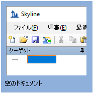
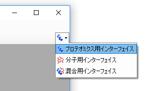
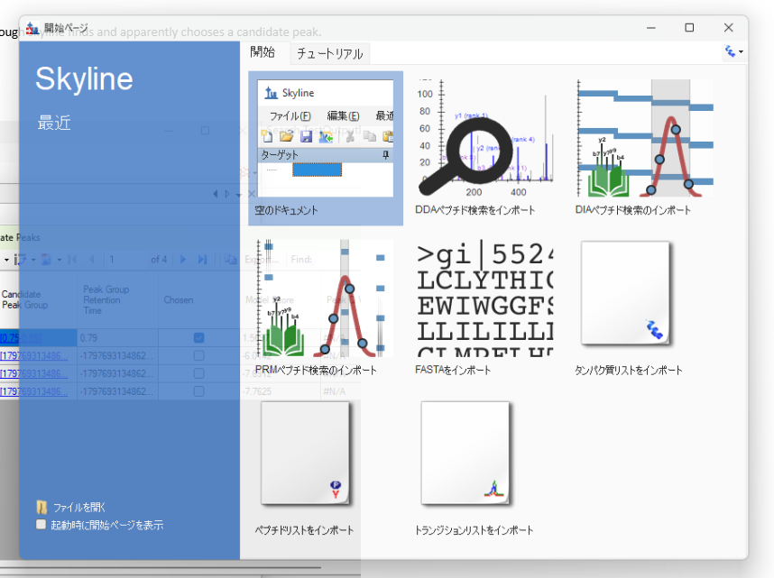
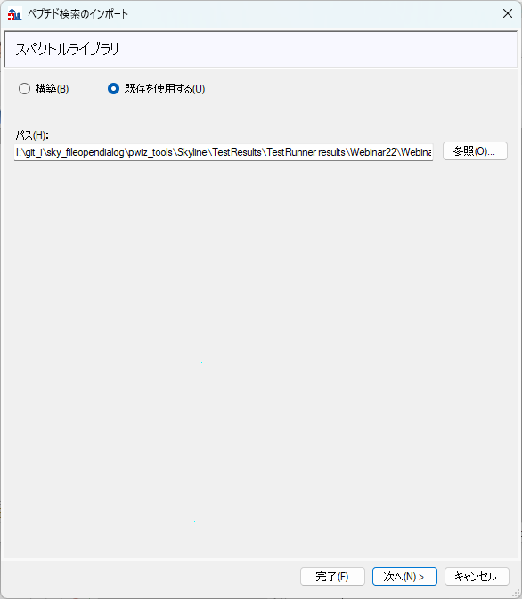
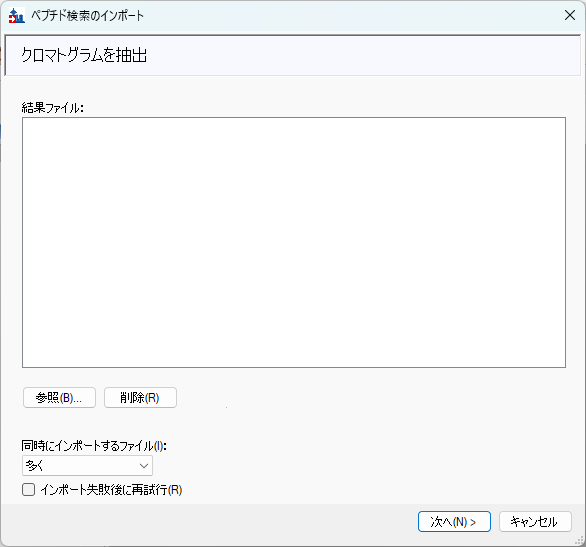

ターゲットトリプル四重極（SRM）アッセイでモニタリングするペプチドとフラグメントの選択は難しく、時間とコストがかかります。MacCossラボのこれまでの研究により、データ非依存性取得（DIA）データが、ターゲットトリプル四重極アッセイにおけるペプチドの パフォーマンスをより的確に予測できることが示されています。DIAメソッドはプロテオームをより包括的にサンプリングし、これらの実験から得られる情報 – フラグメントイオン強度、保持時間、ラン間再現性 – は、ターゲットの選択に役立ちます。
本チュートリアルでは、DIA結果に基づいてSRM分析に適したペプチドを評価および選択するために開発されたワークフローを実行します。具体的には、以下の概念を扱います。
注：EncyclopeDIAを使用したガス相分画サンプルの検索手順は、Pino et al., 2020 MCP論文に記載されています。3つのガス相分画サンプルを検索して別々のクロマトグラムライブラリとして保存し、 EncyclopeDIA 2.13.30以降に搭載されている “Combine multiple libraries” 機能を使用して単一のライブラリに結合します。
このチュートリアルを始めるには、以下のZIPファイルをダウンロードしてください。
https://skyline.ms/webinars/Webinar22.zip
https://skyline.ms/webinars/Webinar22_dia_libA.zip
https://skyline.ms/webinars/Webinar22_dia_libB.zip
https://skyline.ms/webinars/Webinar22_dia_libC.zip
DIAライブラリファイルは、クロマトグラムライブラリの構築に使用したガス相分画DIAランを含むため、非常に大きい（それぞれ約3 GB）ことに注意してください。これらのファイルを、以下のようなコンピュータ上のフォルダに 解凍します。
C:\Users\brendanx\Documents
これにより以下の新しいフォルダが作成されます。
C:\Users\brendanx\Documents\Webinar22
本チュートリアルを始める前にSkylineを使用していた場合には、Skylineをデフォルト設定に戻すことをお勧めします。デフォルト設定に戻すには、以下の操作を行います。

現在のSkylineインスタンスの設定がデフォルトにリセットされました。
このチュートリアルはプロテオミクスのトピックを扱うため、ユーザーインターフェースが “プロテオミクスインターフェース” に設定されていることを確認してください。Skylineツールバーの右上隅にある ユーザーインターフェースボタンをクリックし、下記のようなプロテオミクスインターフェースを選択します。

Skylineはプロテオミクスモードで動作しており、Skylineの右上隅にタンパク質のアイコンが表示されます。
このセクションの目的は、GPF DIA検索とピーク境界データをインポートすることです。Skylineに実験の結果と背景情報を与えます。これには、どのペプチドとトランジションを抽出するかのパラメータも含まれます。 これは、ペプチドの保持時間とスコアリングに関する情報を提供する他のDIA検索出力に合わせて調整することもできます。
ファイル > 開始ページを使用して開始ページに戻り、DIAペプチド検索のインポートをクリックします。

インポートの前にファイルを保存するよう求められます。DIA_to_SRM_Tutorial.skyとして保存します。

次へをクリックします。
ガス相分画によりレプリケートごとに複数の注入があるため、ここでは結果ファイルの追加をスキップします。次へをクリックして続行します。続行してもよいか尋ねるポップアップウィンドウが表示されるので、 はいをクリックします。

このチュートリアルではペプチド検索ステップで修飾が含まれていなかったため、次へをクリックして続行します。
このデータセットでは、以下のオプションを使用してプロダクトイオンを抽出します。

次へをクリックします。
これらのオプションの一部は、通常のDIA分析で使用するものとは少し異なる場合があります。たとえば、3番目のイオンに制限する点 – これは、最終目標であるターゲットトリプル四重極アッセイで よく使われるヒューリスティックです。
結果からMS/MSのみを抽出します。以下のオプションを選択します。

次へをクリックします。
このデータセットでは酵素Trypsin [KR | P]を選択し、最大切断見逃し数を0に設定します。参照をクリックしてuniprot_human_25apr2019.fastaファイルに移動します。

完了をクリックします。ポップアップにFASTA処理の進行状況が表示されます。
タンパク質を関連付けるための新しいポップアップが表示されます。以下のオプションを使用します。
下部のタンパク質関連付け結果テーブルの数値は、タンパク質とペプチドの扱いに関する異なるオプションを選択すると変化することに気づくでしょう。“Mapped” = ライブラリで検出されたペプチドを持つ、 “Unmapped” = FASTAには含まれるがマッピングされるペプチドがない、“Targets” = タンパク質グループ化後に上記の基準を満たす、“Shared peptides” = FASTA内の複数のタンパク質エントリに含まれる、を意味します。

OKをクリックします。
Skylineドキュメントのターゲットビューに、ライブラリ（この場合はEncyclopeDIA結果）で検出されたタンパク質、ペプチド、プリカーサー、フラグメントが入力されたはずです。一部のターゲットは、選択した パラメータ（例：切断見逃し数0）に基づいてさらにフィルタリングされます。

SRMアッセイをスケジュールするには、PRTCなどのインデックス付き保持時間標準が必要です。このDIA実験ではサンプルにPRTCが含まれていましたが、ペプチド検索/ライブラリには含まれていなかったため、ここで ドキュメントに追加する必要があります。これらが抽出されるよう、結果のインポートとクロマトグラムの抽出の前に行います。これにはいくつかの方法がありますが、時間を節約するために既存のドキュメントから コピー＆ペーストできます。配列やFASTAに基づいて追加する場合は、重標識残基の手動アノテーションが必要です。

ドキュメントを保存します。
環境がすべて整ったので、ライブラリから入力されたすべてのペプチドのクロマトグラムをインポートして抽出する準備ができました。ガス相分画では6つの別々の注入を使用するため、結果を多重注入レプリケートとして インポートします。

インポートには数分かかる場合があります。ドキュメントを保存します。
これで、ドキュメント設定に一致するすべてのDIA結果が得られました。次に、これらの結果を確認して、再現性のあるペプチドのみをフィルタリングします。
この方法の利点は、これらのターゲットタンパク質のペプチドが自分のサンプルで測定されることを確信できる点です。なぜなら、自分のDIA実験ですでにそれらを観測しているからです。さらに、DIA測定を通じて得られた 事前知識に基づいてペプチドの選択を行うことができます。具体的には、フラグメントイオン強度と再現性の情報 – 3回のレプリケート注入について計算された変動係数（%CV）として測定 – を持っています。 この情報は、SRMアッセイで良好なパフォーマンスを発揮する可能性が最も高いペプチドを各タンパク質について選択するのに役立ちます。
ペプチドの絞り込みでは、まずいくつかの全体的な絞り込みから始めます。これにより、将来必要に応じて多くの異なるタンパク質について再検討できる、既知の再現性のあるペプチドのセットとして機能する ペプチドのリストが残ります。このフィルタリングは、ステップ3で示すように特定のタンパク質についても行うことができます。まずペプチド%CVでフィルタリングし、次にペプチド強度ランクでフィルタリングします （フィルタリングは逆の順序でも実行できます）。%CVフィルターは不良な検出を除去し、不十分なクロマトグラフィーや再現性を捕捉します。次にペプチド強度フィルターが各タンパク質について最良のものを選択し、 各ペプチドについてフラグメント強度ランクを選択します。フィルタリングパラメータは緩和することができ、生物学的に興味のある特定のペプチドを保持/追加し直すこともできます。重要な注意点として、この方法は DIA実験で検出されたタンパク質にのみ使用できます。
レプリケートがある場合、Skylineはすべてのペプチドについて%CVを自動的に計算します。この情報は、ドキュメントグリッドのオプション列で確認できます。まず、このドキュメントの一般的な%CV分布を把握します。
表示 > ピーク領域 > CVヒストグラムに移動します。

デフォルトビューでは、20% CVに赤い破線が表示されます。プロパティをクリックしてCVカットオフを30に調整することで、30%を表示するように調整できます。

一般的なカットオフとして、ターゲットアッセイに適した候補ペプチドのデータベースに含めたいペプチドについて、以下のルールを課します：タンパク質ごとに2つのペプチドが必要で、ペプチドは3つのレプリケート全体で 30% CV未満である必要があります。
絞り込み > 詳細設定に移動します。複数の絞り込みオプションを持つ新しいポップアップウィンドウが表示されます。ドキュメントタブで以下のオプションを選択します。

一貫性タブで以下のオプションを選択します。

OKをクリックします。ファイル > 名前を付けて保存を使用して、絞り込んだドキュメントを保存します（例：DIA_to_SRM_Tutorial-filtered.sky）。
これで、再現性の低いペプチドとタンパク質を除外しました。具体的には、Skylineドキュメントの右下隅で、少なくとも3つのトランジションと30%未満の%CVを持つ2つ以上のペプチドを持つタンパク質が 967個（7,122ペプチド）あることが確認できます。
この例では、関心のある研究で差次的に存在量が変化すると以前に報告されたCSF内の67個のタンパク質のサブセットに興味があるとします。これで、それらのタンパク質からのペプチドの選択だけに集中できます。
このステップでは、リストに含まれるタンパク質のみをドキュメントに残します。

OKをクリックします。ドキュメントに含まれていないリスト内のタンパク質を一覧表示する新しいポップアップが表示されます。OKをクリックして続行します。

これで、リストのタンパク質に一致するペプチドのみを含むドキュメントができました。さらに、これらは%CVフィルタリングによって保証された良好な再現性を持つペプチドのみです。ターゲットタンパク質の数や プロジェクトの目的に応じて、この時点でペプチドとトランジションの追加フィルタリングを行うことができます。この場合、ペプチドターゲットをタンパク質ごとに2つに制限し、トランジションをペプチドごとに5つに 制限するだけにします。これはチュートリアルのために手動評価の一部を省略するものですが、より小規模なアッセイでは追加の手動評価と文献検索を強くお勧めします。
絞り込み > 詳細設定に移動します。結果タブで以下のオプションを設定します。
他のケースでは、最大プリカーサーピークのみや結果が欠落しているノードを削除などの選択を行いたい場合がありますが、ここではドキュメントは変わりません。

OKをクリックします。編集 > すべて展開 > タンパク質に移動します。

ファイルをSRM_targets.skyとして保存します。
これで、2つのペプチドを持つ60個のタンパク質と13個のPRTCペプチドを含むドキュメントができたはずです。これをSRMアッセイのリストとして使用します。各ペプチドについて5つのトランジションを保持する理由は、 初回のSRMアッセイテストの後にリストを調整する余地を確保するためです。
DIA実験で測定された保持時間を活用するには2つの戦略があります。1つの簡単な方法は、スケジュールされていないSRMアッセイでピークが正しく選択されていることを確認するためのライブラリとして使用することです。 もう1つの方法は、DIAランに含まれるiRT標準を使用してSRMランを直接スケジュールすることです。これには、SRMアッセイを実行したいHPLCと装置でiRTサンプルのみを数回ランする必要があります。この場合は Easy nLCとThermo Altisトリプル四重極です。iRTの詳細については、“iRT保持時間予測” チュートリアル、または同名のウェビナー#7をSkylineウェブサイトで参照してください。この例では、DIA結果から 計算機を構築し、それをより短い勾配のSRMメソッドのスケジューリングに使用します。
表示 > 保持時間 > 回帰 > スコア対ランに移動します。


iRT計算機に名前を付け（例：CSF_targets）、作成をクリックします。ポップアップウィンドウiRTデータベースの作成で、iRT計算機ファイルに名前を付けます。計算機をこのチュートリアル フォルダに保存し、前と同じ名前を付けます：CSF_targets。完了したら保存をクリックします。
iRT計算機の編集ウィンドウで、iRT標準からドロップダウンでPierce (iRT-C18)を選択します。

これでiRT値が設定されました。iRT値は単位がないことを思い出してください。これらは溶出順序に関連し、ここでは-27.60から100の範囲です。

ペプチド設定 – 予測タブで、保持時間予測子オプションCSF_targetsが選択されているはずです。ドロップダウンをクリックして<現在の設定を編集>を選択します。 時間ウィンドウを5分に調整し、OKをクリックします。再度OKをクリックします。
標準ペプチドの追加ウィンドウが表示された場合は、いいえをクリックします。（これは将来修正されるバグのようです。）
回帰プロットを右クリックし、計算機 > CSF_targetsを選択します。これで回帰が更新されるはずです。

1つのペプチドGSGVGEQDGGLIGAEEKは、その m/z 801.9 がiRTペプチドのないガス相分画800–900に入るため、較正できなかったことに注意してください。（これも将来修正されるバグです。）今のところ、グラフを 右クリックして外れ値を削除を選択します。クロマトグラムを見ると、各ペプチドの予測された保持時間の両側に薄い黄色のセクションが表示されています。
このステップでは、新しい勾配、HPLC、カラムのセットアップで、スケジュールされていないiRT標準のみのデータファイルを取得してインポートします。

設定 > トランジション設定に移動します。予測タブで以下の設定を使用します。
フルスキャンタブで以下の設定を使用します。

OKをクリックします。

ファイルがインポートされると、回帰グラフが新しいデータに合わせて調整されるはずです。iRT標準のみが測定されましたが、Skylineは保存されたiRTスコアに基づいて他のすべてのペプチドの保持時間を予測できるように なりました。これは、グラフのx軸上の紫色の点で示されています。
表示 > 保持時間 > スケジューリングに移動します。

装置とクロマトグラフィーに適した同時トランジション数を常に選択する必要があります。目標は、ピーク幅と装置の滞留時間を考慮して、ピーク全体のポイント数のバランスを取ることです。Skylineでは、同時トランジション 数に対するウィンドウ幅の影響を調べることができます。

ファイル > エクスポート > トランジションリストに移動します。

同時トランジション数を選択したら、OKをクリックします。表示されるスケジューリングダイアログボックスで保持時間の平均を使用を選択し、OKをクリックします。トランジションリストに 名前を付けて保存をクリックします。注：複数のメソッドが書き込まれる場合、Skylineはファイル名の末尾に0001から始まる番号を自動的に追加します。
ファイル > 格納フォルダを開くを使用して、トランジションリストを保存した場所に移動します。

複数のトランジションリスト – サンプル注入ごとに1つ – があります。複数のメソッドがあっても、各メソッドにiRT標準フラグメントが含まれていることに注意してください。新しいトランジションリストは、 Xcaliburで新しい装置メソッドを作成する準備が整いました。
おめでとうございます！新しいアッセイ用のスケジュール済みトランジションリストが完成しました。